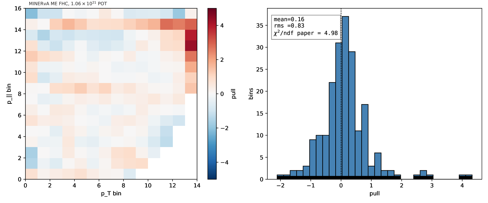
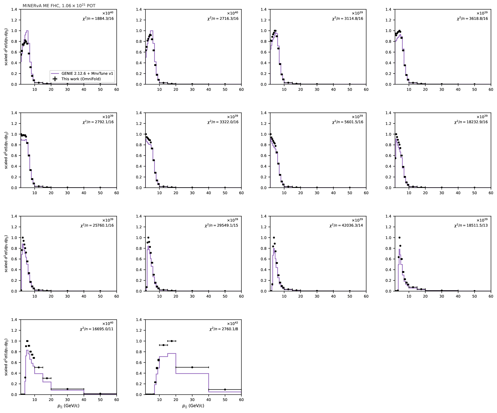
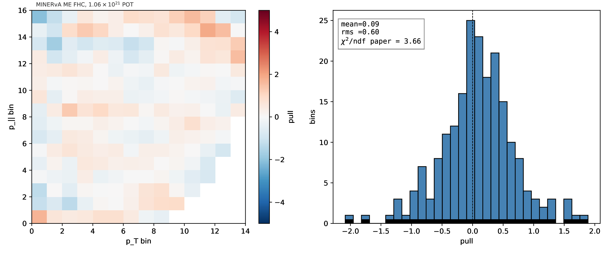
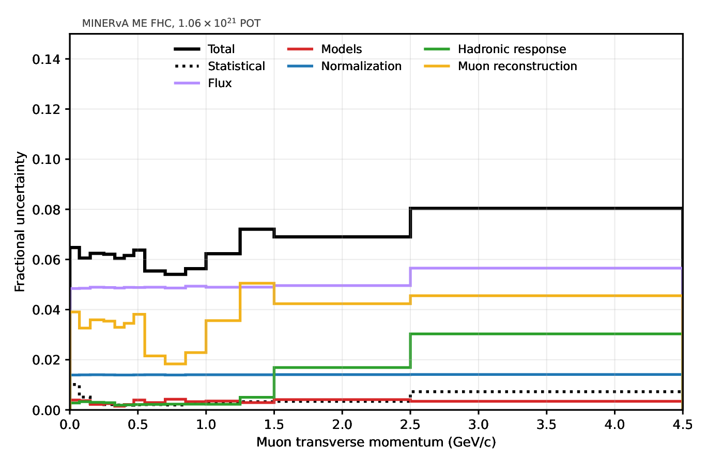
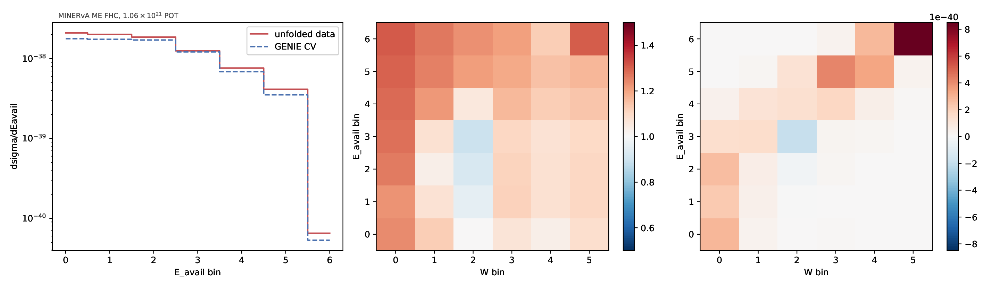
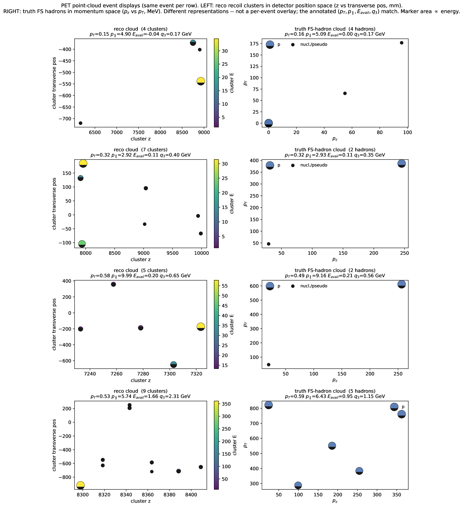
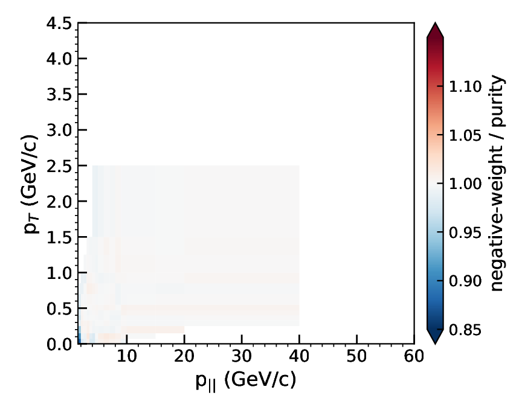
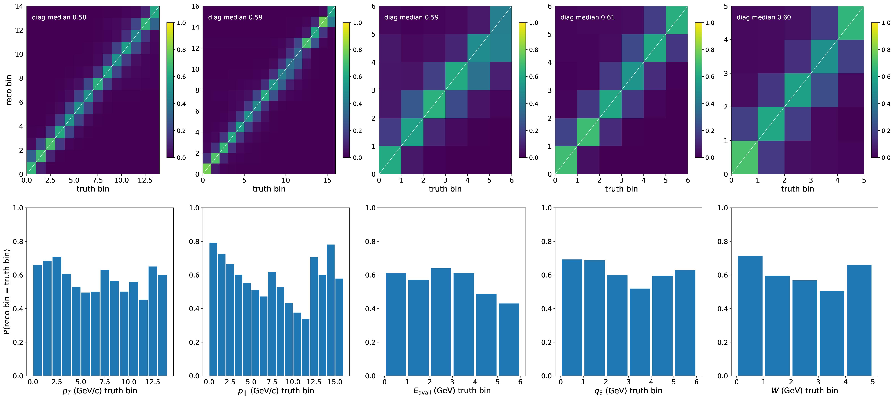
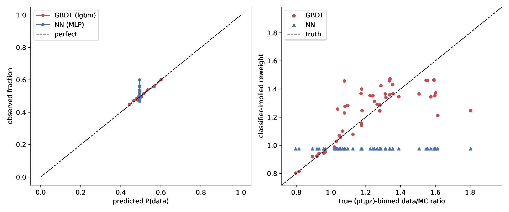
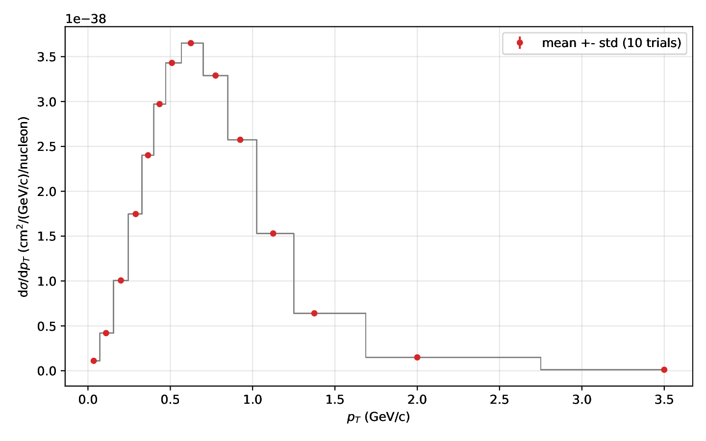

Add Eavail, q3, W
Every new dimension must recover its lower-dimensional anchor when marginalized.
MINERvA collaboration · 16 July 2026
Learning weights on events instead of corrections between bins
THE MEASUREMENT PROBLEM
WHY UNBINNED?
The events were never sparse.
The histogramming made them sparse.
THE ENGINE
Ask a classifier to distinguish data from simulation at a point x.
Hard to tell apart → weight near 1
Data-like region → weight above 1
MC-heavy region → weight below 1
ONE OMNIFOLD ITERATION · STEP 1
ONE OMNIFOLD ITERATION · STEP 2
prior event weights
Step-1 event weights
THE OUTPUT
Rebin or project recorded truth features without retraining. Adding a genuinely new feature requires it in the event representation.
FROM MINERVA OPEN DATA TO OMNIFOLD
selected reconstructed events
4,119,797wrong-sign, NC and out-of-fiducial background
reco and truth features together
every true signal event
32,849,103FROM EVENT WEIGHTS TO A CROSS SECTION
TRY TO BREAK IT BEFORE TRUSTING IT
truth reweights, hidden resolution variable, alternate model
PASSsame-ensemble Gaussianity check
0.794unit-normal reference 0.798; not coveragedoubling the iteration count
0.026%change in total σneural-network cross-check
1.0078NN / GBDT totalfirst update recovers D'Agostini behavior
CONNECTEDdescriptive classifier check
0.535 → 0.501no calibrated p-valueTHE TRUST ANCHOR
Unbinned in training; binned afterward into MINERvA's published 14 × 16 grid.

AGREEMENT IS GOOD — BUT NOT FEATURELESS


WHY KEEP THE EVENTS?

Every new dimension must recover its lower-dimensional anchor when marginalized.

The positive difference concentrates at high Eavail and high W. Significance is withheld pending corrected UQ.

Replace a few scalar inputs with reconstructed calorimeter-cluster point clouds.
TAKEAWAYS
01OmniFold is iterative density-ratio reweighting through paired simulated events.
02The MINERvA open product supports a complete event-level cross-section pipeline.
03The 2D result reproduces the published measurement and anchors higher-dimensional work.
joseph.bailey · OmniFold / MINERvA open data
BACKUP · ALGORITHM
ωi(t) = νi(t−1) · f1(xreco,i)1 − f1(xreco,i)
Learn data / current reconstructed simulation; pull ω through event pairing.νi(t) = f2(xtruth,i)1 − f2(xtruth,i)
Learn pulled truth / prior truth; ν becomes the next push weight.BACKUP · EVENT CATEGORIES
enters both classifier steps
included in reco-side subtraction
native truth-only OmniFold entry
purity-weighted out of data target

BACKUP · DETECTOR RESPONSE

BACKUP · CLASSIFIER CHECKS

BACKUP · REGULARIZATION
More iterations can chase smaller detector-level discrepancies.
5→10 moves total σ by 0.026%; per-bin shape RMS 1.54%.Depth, number of trees and training sample determine ratio smoothness.
ML variability is measured with independent split/seed ensembles.
BACKUP · RESULT STATUS · 13 JUL 2026